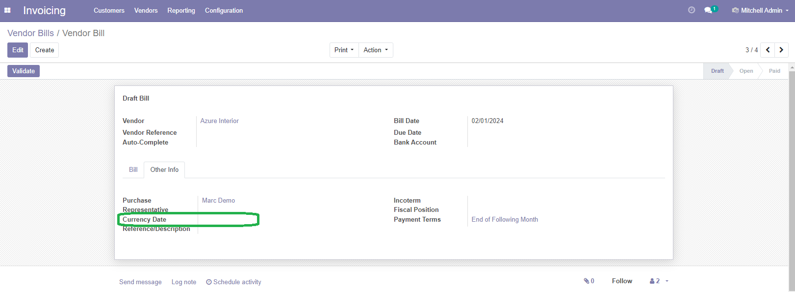

Store currency date on invoice for specific currency rate

Permette di memorizzare la data valuta in fattura
:alt: Account Invoice - Currency Date
:width: 98%






This module adds some features to order type (see below Features for more info).
Destination location
You can force destination location based on order type. If destination location field is empty, ordinary Odoo process is executed, which is customer location.
Automatic owner assign or de-assign on picking confirmation
When picking is confirmed, the owner can be assigned or deassigned or none operation is done. This feature is useful specific order types, like:
Leave empty for manual management.
Automatic picking validation upon sale order confirmation
Force picking validation on sale order confirmation.
Delivered quantity method
This field force the delivered method for all sale order lines. A new method "After Return" is added to list. Delivered quantity of all sale order lines with this method are set ot zero when picking is confirmed. Actual delivered quantity will be set on confirmation of "for sale" specific picking.
This feature is useful for specific order type (see above Automatic owner assign ...).
Not for sale
Usually, sale orders start the sale process which ends with an invoice. This flag declare that the sale order is not for sale. Delivered quantity in all sale order lines are set with "After Return" (see above Delivered quantity method).

Questo modulo aggiunge alcune caratteristiche al tipo di ordine.
Ubicazione di destinazione
SI può forzare l'ubicazione di destinazione in base al tipo di ordine. Se il campo è lasciato vuoto viene eseguito il normale processo di Odoo che è ubicazione clienti.
Assegnazione o deassegnazione automatica del proprietario dello stock
Quanto un prelievo è confermato, il proprieatrio dello stock può essere assegnato, deassegnato o nessuna operazione è eseguita. Questa caratteristica è indispensabile per alcuni tipi di ordine, quali:
Lasciare vuoto per gestione manuale.
Validazione automatica del prelievo alla conferma ordine
Forza la conferma del prelievo alla conferma dell'ordine.
Metodo consegna quantità
Questo campo forza il Metodo consegna quantità su tutte le righe dell'ordine. Un nuovo metodo "Dopo reso" è disponibile. Le quantità consegnate di tutte le righe con questo metodo sono impostate a zero alla conferma del prelievo. Il valore reale sarà calcolato da specifica conferma di prelievo per vendita.
Questa caratteristica è indispensabile per alcuni tipi di ordine (vedere sopra Assegnazione o deassegnazione automatica ...)
No per vendita
Di norma, gli ordini iniziano il processo di vendita che termina con un una fattura. Questa impostazione dichiara che l'ordine non è per la vendita. Il metodo di calcolo di consegna quantità è impostata con "Dopo reso" (vedere sopra Metodo consegna quantità).


To configure Sale Order Types you need to:
Sales » Configuration » Sales Orders Types » Create a new sale order type with all the settings you want
The field Picking Auto Confirmation requires module sale_order_lot_selection.

sale.order._action_launch_stock_rule()
of the module sale_stock. The function, now can use the destination location different
from the partner destination location.
In this way is very simple to manage sale order on consignment or for evaluation or
for tolling agreement or for subcontracting.
For this reason, this module depends on specific 12.0.1.0 version of sale_stock module
This module may conflict with sale_order_automatic_workflow because overlaps some features of that module. Please choice this module or else sale_order_automatic_workflow but not both.
Authors | Autori:
Contributors | Partecipanti:
This module is maintained by the SHS_AV s.r.l..
This module is part of account-invoicing project.
Published information on | Informazioni pubblicate: 2024-02-22